건설기계정비산업기사 (2007-08-05 기출문제)
1과목: 건설기계정비
1. 4행정 사이클 6실린더 기관의 공기식 조속기 분사펌프를 시험한 표이다. 이대로 운전하면 어떤 현상이 일어나는가?
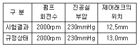
- 저속회전이 불량하다.
- 최고 출력이 부족하게 된다.
- 조속 작용이 불량하게 된다.
- 공회전이 불량하다.
(정답률: 56%)

2. 타이어식 건설기계 차량에서 제동시 브레이크가 잘 듣지 않는 원인으로 볼 수 없는 것은?
- 마스터 실린더에 오일이 부족하거나 없다.
- 브레이크 페달의 유격이 지나치게 크다.
- 브레이크 라이닝에 오일이 묻어 있다.
- 브레이크 라이닝 두께가 1/3 정도 마모 되었다.
(정답률: 78%)
3. 축간거리가 2.5m이고 바깥쪽 바퀴의 조향각 30°, 안쪽 바퀴의 조향각 35°인 덤프 트럭의 최소 회전반경은? (단, 바퀴의 접지면 중심과 킹핀과의 거리는 15cm이다)
- 3.15m
- 4.85m
- 5,15m
- 6.15m
(정답률: 67%)
4. 기관의 과열 원인이 아닌 것은?
- 기관 오일 부족 또는 불량
- 커넥팅 로드 베어링 마모
- 냉각수 부족 또는 펌프 불량
- 밸브 간극 부적당
(정답률: 73%)
5. 밸브장치에서 소음이 심한 원인 중 맞지 않는 것은?
- 밸브 스프링의 결함
- 푸시로드 및 로커 암 결함
- 타이밍 기어의 결함
- 밸브 리프터의 결함
(정답률: 67%)
6. 다음 유압 기호 중 유압 펌프를 상징하는 기호는?
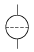
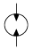
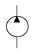
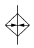
(정답률: 75%)
7. 축전지 전해액을 실제 측정한 비중이 1.240이고 이 때 전해액의 온도는 40℃ 이다. 20℃ 로 환산한 비중은? (단, 표준 온도는 20℃로 한다)
- 1.226
- 1.240
- 1.248
- 1.254
(정답률: 75%)
8. 타이어식 건설기계의 동력 전달장치에서 자재 이음의 종류를 나타낸 것이다. 이 중 틀린 것은?
- 추진축 조인트
- 플렉시블 조인트
- 훅 조인트
- 등속 조인트
(정답률: 58%)
9. 크레인의 붐이 상승하지 않는다. 고장 원인으로 해당되지 않는 것은?
- 스윙 멈치 브레이크가 미끄러질 때
- 붐 호이스트 클러치가 미끄러질 때
- 붐 호이스트 브레이크가 풀리지 않을 때
- 활차에서 케이블이 빠졌을 때
(정답률: 35%)
10. 유압식 동력 조정장치(PCU：Power Control Unit)또는 윈치나 오일 펌프 구동을 위해 동력 취출(Power Take Off：PTO) 장치가 사용된다. 동력 취출 방법으로 적당하지 않은 것은?
- 엔진 프런트 PTO
- 엔진 플라이 휠 PTO
- 트랜스미션 PTO
- 추진축 PTO
(정답률: 60%)
11. 트랙터 리코일 스프링의 역할로서 적당하지 않는 것은?
- 전진시 받는 충격을 흡수한다.
- 동력 조정장치(PCU)의 조작을 원활하게 한다.
- 트랙터에서 받는 충격을 흡수한다.
- 쇽업소버와 비슷한 역할을 한다.
(정답률: 79%)
12. 불도저에서 연료 필터를 교환하고 시동을 시도하였으나 실패하여 공기 빼기 작업을 하려고 한다. 각 부품별로 공기를 빼는 순서가 맞는 것은?
- 공급펌프 → 분사펌프 → 연료여과기 → 노즐
- 분사펌프 → 노즐 → 공급펌프 → 연료여과기
- 노즐 → 분사펌프 → 연료여과기 → 공급펌프
- 공급펌프 → 연료여과기 → 분사펌프 → 노즐
(정답률: 92%)
13. 항타기에서 바운싱(bouncing)이 일어나는 원인은?
- 파일이 무거울 때
- 파일이 수직으로 박히지 않을 때
- 항타의 간격이 일정치 않을 때
- 가벼운 해머를 사용할 때
(정답률: 56%)
14. 야간에 운전 중인 건설기계의 전조등 광도가 점차적으로 감소된다면 점검해야 할 부품은?
- 배선
- 릴레이
- 발전기
- 스위치
(정답률: 83%)
15. 건설기계의 운행 중 엔진 오일이 많이 줄어드는 원인은?
- 오일 펌프의 불량
- 밸브 가이드의 마모
- 압력 게이지의 불량
- 필터의 불량
(정답률: 85%)
16. 발전기 내부에 설치되어 브러시와 함께 코일에 전류를 공급하는 것은?
- 스테이터
- 다이오드
- 슬립링
- 정류자
(정답률: 48%)
17. 모터 그레이더 규격은 무엇으로 표시하는가?
- 작업 가능한 상태의 중량(t)으로 표시
- 최대로배토 가능한도사의 량(m3)으로표시
- 배토 판의 길이(m)로 표시
- 시간당 작업 가능한 거리(m)로 표시
(정답률: 55%)
18. 굴삭기에서 버킷 실린더 내경이 80mm, 작용 압력이 35kgf/cm2일 때 버킷에 작용하는 힘은?
- 280kgf
- 2800kgf
- 175.9kgf
- 1759kgf
(정답률: 59%)
19. 전자제어 디젤 기관 시스템에서 고장이 발생하면 그 고장 부분을 제어 유닛이 안전하게 작동시키는 최소한의 기능이 있다. 이 기능은 무엇인가?
- 림프 기능
- 페일 세이프 기능
- 앵글라이히 기능
- 타이머 기능
(정답률: 83%)
20. 건설기계의 전자제어 기관에서 안정된 공전속도를 유지하기 위해 공전속도 제어 시스템이 있다. 공전속도 제어 시스템 작용에 영향을 주는 요소가 아닌 것은?
- 대기압의 상태
- 기관의 냉각수 온도
- 공전 스위치의 접점 개폐
- 에어컨의 부하
(정답률: 53%)
2과목: 내연기관
21. 정압 비열 Cp 정적 비열 Cv 및 비열비 k와의 관계식 중 옳은 것은?
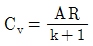
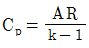
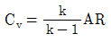
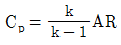
(정답률: 68%)
22. 다음 중 가솔린 기관 연료의 구비조건으로 틀린 것은?
- 발열량이 클 것
- 적당한 휘발성이 있을 것
- 안티-노크성이 클 것
- 연소 퇴적물의 생성율이 좋을 것
(정답률: 74%)
23. 총배기량이 1620cc인 4행정 사이클 엔진에서 회전수 2000rpm, 도시평균 유효압력 8.0kgf/cm2일 때 축 마력이 23 PS 이다. 이 엔진의 기계효율은?
- 0.08%
- 77.5%
- 79.9%
- 83.7%
(정답률: 40%)
24. G=2kg/sec 의 유량으로 = P1=1ata, P2=1.5ata 까지 과급기를 써서 공기를 단열 압축 할 경우 이론 마력은 몇 PS인가? (단, T1=228K, R=29.27kg-m/kg-K, 비열비 k=1.40이다)
- 79
- 28
- 97
- 51
(정답률: 10%)
25. 다음 중 열효율이 가장 좋은 디젤 기관의 연소실 형식은?
- 공기실식
- 직접분사실식
- 와류실식
- 예연소실식
(정답률: 82%)
26. 기관의 기화기식 연료장치에서 혼합기의 양을 조절하는 것과 가장 관계가 큰 것은?
- 스로틀(throttle) 밸브의 개도
- 초크(chock) 밸브의 개도
- 니들(needle) 밸브의 크기
- 메인 노즐(main nozzle)의 구멍 크기
(정답률: 77%)
27. 다음 중 가스 터빈에 사용되는 사이클은?
- 카르노 사이클
- 스털링 사이클
- 브레이턴 사이클
- 방겔 사이클
(정답률: 56%)
28. 피스톤 링의 역할 중 틀린 것은?
- 기밀을 유지한다.
- 피스톤의 열을 실린더 벽에 전달한다.
- 오일 링은 실린더 벽 오일의 점도를 제어한다.
- 오일 링은 실린더 벽의 윤활유를 제어한다.
(정답률: 67%)
29. 비중 0.7, 저위발열량이 1⑤00kcal/kg 인 연료를 사용하여 10분 동안 시험하였더니 연료 소비량이 6ℓ이었다. 이 기관의 연료 마력은 약 몇 PS 인가?
- 210
- 420
- 500
- 615
(정답률: 72%)
30. 가솔린 연료가 완전 연소시 발생하는 생성물질로만 짝지어진 것은?
- CO2, H2O, N2
- CO2, H2O, CO
- CO2, H2O, HC
- CO2, NOx, HC
(정답률: 36%)
31. 베어링 하중을 P, 기관회전수를 n, 점성계수를 μ라 할 때 마찰계수 f와의 관계를 표시한 것은?
- f∝μn/P
- f∝Pn/P
- f∝n/μP
- f∝μP/n
(정답률: 30%)
32. 벤투리관 목부의 지름이 15mm, 유속이 50m/s, 유량계수 0.85, 공기밀도가 1.75kgf/m3 일 때 공기 질량 유량은 몇 kg/s인가?
- 0.013
- 0.025
- 0.031
- 0.⑤2
(정답률: 24%)
33. 실제 자동차용 기관에서 최대 압력이 발생하는 시기는?
- 상사점
- 상사점 전 10∼20° 지점
- 상사점 후 10∼20° 지점
- 동력행정이 반쯤 진행되었을 때
(정답률: 57%)
34. 가솔린 기관의 열역학적 사이클은?
- 오토 사이클
- 디젤 사이클
- 브레이튼 사이클
- 스털링 사이클
(정답률: 90%)
35. 기관 운전시 발생하는 소음과 관계가 없는 것은?
- 유체 소음
- 연소 소음
- 냉각 소음
- 기계 소음
(정답률: 65%)
36. 터보 장착 기관에서 흡입 공기를 냉각시키기 위한 장치는?
- 배기 순환장치
- 흡입 공기장치
- 인터 쿨러장치
- 냉각 순환장치
(정답률: 97%)
37. LPG 자동차의 과충전 방지장치의 기준으로 적합하지 않은 것은?
- 액화석유가스에 견디는 화학적 성빌 및 충분한 기계적인 강도를 가지는 구조일 것
- 설정점을 용이하게 변경할 수 있는 구조일 것
- 눈으로 보아 사용상 유해한 홈, 균열 등의 결함이 없을 것
- 30kgf/cm2 이상의 내압 시험에 견딜 수 있을 것
(정답률: 56%)
38. 에어 클리너는 사용 목적이나 조건에 따라 다양한 종류가 없다. 다음 중 그 종류에 해당하지 않는 것은?
- 건식
- 습식
- 원심 분리식
- 공명식
(정답률: 66%)
39. 다음 중 내부 냉각 효과에 대한 설명 중 틀린 것은?
- 기화열은 주위(흡기다기관, 실린더 헤드, 피스톤, 실린더 등)로부터 공급받는다.
- 증발열이 적게 필요로 하는 연료를 사용할 수록 냉각 효과는 크다.
- 내부 냉각 효과란 연료가 기화되면서 기관을 냉각시키는 효과를 말한다.
- 내부 냉각 효과가 증대되면 충전율은 개선되고 고압축 압력이 가능하게 된다.
(정답률: 48%)
40. 기관의 배기량을 나타내는 것은?
- 연소실 체적
- 실린더 체적
- 크랭크실 체적
- 행정 체적
(정답률: 65%)
3과목: 유압기기 및 건설기계안전관리
41. 유압펌프 중 나사 펌프의 특징 설명으로 틀린 것은?
- 운전이 정숙하다.
- 점도가 낮은 기름을 사용할 수 있다.
- 맥동이 없는 안정된 압력의 기름을 토출한다.
- 기어 펌프처럼 폐입현상이 나타난다.
(정답률: 66%)
42. 유압 작동유 속에 혼입되는 불순물을 제거하기 위하여 사용하는 유압 부속장치는?
- 축압기
- 증압기
- 여과기
- 공기청정기
(정답률: 79%)
43. 실린더 입구의 분기 회로에 유량제어 밸브를 설치하여 실린더 입구측의 불필요한 유압유를 배출시킨 속도제어 회로인 것은?
- 로킹 회로
- 미터 아웃 회로
- 카운터 밸런스 회로
- 블리드 오프 회로
(정답률: 71%)
44. 다음 그림 기호의 명칭은?
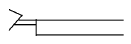
- 인력
- 버튼
- 레버
- 페달
(정답률: 64%)
45. 유압 회로의 최고압력을 제한하여 회로 내의 과부하를 방지하여 유압 모터의 토크나 실린더의 출력을 조절하는 밸브는?
- 언로딩 밸브
- 스로틀 밸브
- 시퀀스 밸브
- 릴리프 밸브
(정답률: 57%)
46. 유압 응용 장치에서 오일의 팽창 및 수축을 이용한 경우에 해당되는 것은?
- 진동 개폐 밸브
- 쇼크 업소버
- 유압 프레스
- 토크 컨버터
(정답률: 48%)
47. 작동유의 점도가 너무 높을 경우 유압장치에 발생하는 문제로 맞는 것은?
- 내부 누설 및 외부 누설
- 내부 마찰의 증대와 온도 상승
- 펌프 효율 저하에 따른 온도 상승
- 정밀한 조절과 제어 곤란 등의 현상 발생
(정답률: 74%)
48. 유압용 실 중 스퀴즈 패킹의 대표적인 O링의 특징 설명으로 틀린 것은?
- 장착 및 떼어내기가 용이하고 구조가 간단하다.
- 마찰 저항이 비교적 크다.
- 고정 부분 및 운동 부분의 양쪽에 사용된다.
- 일반적으로 시판되고 있는 O 링의 재질은 니트릴 고무가 표준이다.
(정답률: 53%)
49. 릴리프 밸브 등에서 밸브 시트를 두들겨서 비교적 높은 음을 발생시키는 자려 진동은 무슨 현상인가?
- 채터링 현상
- 서징 현상
- 마찰 현상
- 스틱 슬립 현상
(정답률: 84%)
50. 기름이 흐르는 관의 직경이 10cm 인 관속을 1250 /min의 기름이 흐를 때 기름의 유속은약 얼마인가?
- 2.65m/s
- 26.5m/s
- 265.4m/s
- 0.265m/s
(정답률: 30%)
51. 근로자를 상시 작업시키는 작업장에 대한 표준 조도 기준에 맞지 않는 것은?
- 초정밀 작업 1500룩스[Lx]
- 정밀 작업 1000룩스[Lx]
- 보통 작업 400룩스[Lx]
- 단순 작업 200룩스[Lx]
(정답률: 67%)
52. 가스용접에서 토치 취급 방법으로 틀린 것은?
- 작업에 적당한 팁을 선택하고 산소와 아세틸렌의 압력을 조정 유지한다.
- 토치에 점화할 때는 성냥 등을 사용하여 점화한다.
- 팁이 가열될 때는 냉각시키고 산소 가스만을 작은 량으로 통하게 하여 서서히 냉각시킨다.
- 작업을 시작하기 전에는 호스나 토치의 연결 부분이 완전히 체결되었는가를 확인하여 사용한다.
(정답률: 92%)
53. 굴삭기 유압장치에서 진동 및 이상 음의 과대시 원인으로 가장 거리가 먼 것은?
- 펌프 흡입라인의 저항 과대
- 흡입라인 공기 흡입
- 릴리프 밸브의 떨림
- 밸브류의 시일 마모
(정답률: 50%)
54. 다음 방호장치 중 격리형 방호장치의 종류가 아닌 것은?
- 완전 차단형 방호장치
- 덮개형 방호장치
- 포집형 방호장치
- 안전방책
(정답률: 72%)
55. 안전표지 중 금지표지의 형태는?
- 흰색 바탕에 적색 태두리와 빗선
- 삼각형의 노란색 바탕에 검정 테두리
- 원형의 파란색 바탕에 흰색
- 사각형의 흰색 바탕에 내용 및 문자
(정답률: 84%)
56. 건설기계에서 기관을 점검ㆍ정비할 때 안전 사항으로 적합하지 않은 것은?
- 기관은 중량물이므로 분해ㆍ조립시에는 작업대에 견고하게 고정시킨다.
- 작업시간 단축을 위해서 흡기/배기 매니폴드가 장착된 상태로 실린더 헤드를 분해한다.
- 연료 라인 및 호스를 탈거하기 위해서는 연료라인 내의 잔여 압력을 먼저 해제한다.
- 라디에이터 캡을 열 때는 냉각장치 내의 압력을 제거하며, 서서히 연다.
(정답률: 95%)
57. 대형 건설 차량의 타이어 비드는 어떠한 구조로 되어야 안전한가?
- 외줄 비드 피아노선
- 격자 비드 피아노선
- 트리플 비드 피아노선
- 싱글 비드 피아노선
(정답률: 53%)
58. 공구 보관시 올바른 방법은?
- 가지런히 벽에 세워서 보관
- 끝이 날카로운 공구는 아래로 세워서 보관
- 공장이나 바닥에 안쪽 옆으로 보관
- 보관 상자에 넣어 습기나 수분이 없는 곳에 보관
(정답률: 91%)
59. 압축공기를 이용하는 공구의 사용법 설명 중 틀린 것은?
- 공기 건조기를 사용하면 수명이 길어진다.
- 압축공기를 이용하여 작업복의 먼지를 털어낸다.
- 압축공기 탱크의 수분을 정기적으로 배출 시킨다.
- 공구 사용시는 규정압력 이상이 되지 않도록 주의한다.
(정답률: 74%)
60. 건설기계 정비작업시 수공구 취급에 대한 안전수칙이다. 일반적인 수공구 사용시의 주의 사항으로 잘못된 것은?
- 용도에 맞지 않는 공구는 사용하지 않는다.
- 렌치를 사용할 때는 몸 바깥쪽으로 밀면서 사용한다.
- 해머의 머리 부분에는 쐐기를 박는다.
- 렌치를 사용할 때는 너트에 맞는 것을 사용한다.
(정답률: 66%)
4과목: 일반기계공학
61. 탄소강에서 적열 취성을 일으키는 원인이 되는 원소로 가장 적합한 것은?
- 탄소(C)
- 실리콘(Si)
- 인(P)
- 황(S)
(정답률: 45%)
62. 구름 베어링을 미끄럼 베어링과 비교한 특징을 설명한 것이다. 다음 중 틀린 것은?
- 마찰이 적다.
- 시동 저항이 크다.
- 동력을 절약할 수 있다.
- 윤활유의 소비가 적다.
(정답률: 40%)
63. 3kW, 1800rpm인 전동기로 300rpm인 펌프를 회전시킬 경우 두 축간 거리가 600mm인 V벨트 전동장치에서 원동 풀리의 지름이 120mm일 때 펌프에 설치하는 종동 풀리의 지름은?
- 360mm
- 480mm
- 720mm
- 900mm
(정답률: 53%)
64. 그림과 같은 스프링에 무게 W의 추를 달았더니 만큼 늘어났다. 이 계의 스프링 상수( )는 얼마인가? (단, g는 중력가속도이다.)
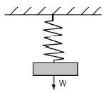
- W/g
- W/δ
- g/W
- δ/W
(정답률: 60%)
65. 다음 중 상온(냉간) 가공에 비교되는 고온(열간) 가공에 관련된 설명으로 올바른 것은?
- 미세결정의 형성이 끝나는 재결정 온도보다 다소 높은 온도에서 작업한다.
- 강에서는 임계 범위보다 높은 온도에서 작업한다.
- 가공경화를 일으켜 강도와 경도가 증가한다.
- 강의 경우 보통 1040℃이며, 최저 재결정 온도보다 낮아야 한다.
(정답률: 64%)
66. 복합재료(composite materials)에 대한 설명으로 틀린 것은?
- 복합재료는 2개 이상의 단열재를 결합시켜보다 성능이 우수하고 경제성이 좋은 재료이다.
- 강화 재료의 형태에 따라 분산강화, 입자강화, 섬유강화 복합재료로 분류된다.
- 유리섬유 강화 플라스틱은 GFRP라고 하며, 폴리에스테르, 에폭시, 페놀수지 등에 지름 5∼8 m 유리섬유를 첨가하여 성형한 것이다.
- 섬유 강화 플라스틱은 피로 강도가 높고 내열성이 우수하며, 내마모성의 성질을 가지고 있어 금속 대체 재료로 사용되는 첨단재료이다.
(정답률: 50%)
67. 굽힘 모멘트 M=4000kg-cm이고 굽힘 강성계수 kgㆍcm2일 경우 곡률 반경은 몇 m 인가?
- 3
- 4
- 5
- 6
(정답률: 25%)
68. 압축하중 2400kgf를 받고 있는 연강 축에 발생하는 압축응력이 960kgf/cm2 일 경우 축의지름은 약 몇 mm 인가?
- 9.28
- 10.24
- 17.85
- 30.36
(정답률: 45%)
69. 기계의 작동유가 갖추어야 할 일반적인 특성이 아닌 것은?
- 윤활성
- 유동성
- 기화성
- 내산성
(정답률: 74%)
70. 목형의 종류에서 현형에 속하는 것이 아닌 것은?
- 단체형(one piece pattern)
- 분할형(split pattern)
- 조립형(built up pattern)
- 회전형(sweeping pattern)
(정답률: 50%)
71. 드릴 자루가 테이퍼인 드릴의 끝 부분을 납작하게 한 부분으로 드릴이 미끄러져 헛돌지 않고 테이퍼 부분이 상하지 않도록 하면서 회전력을 주는 부분의 명칭은?
- 탱(tang)
- 몸체(body)
- 마진(margin)
- 사심(dead center)
(정답률: 53%)
72. 절삭가공에서 발생하는 칩의 일반적인 형태가 절삭력으로 가공된 면이 뜯어낸 것과 같은 형태의 표면이나 땅을 파는 것과 같이 불규칙한 면으로 가공되는 일명 열단형 칩이라고도 하는 칩은?
- 유동형 칩
- 경작형 칩
- 전단형 칩
- 균열형 칩
(정답률: 20%)
73. 알루미늄(Al) + 구리(Cu) + 마그네슘(Mg)의 합금으로 시효경화를 일으키며, 인장강도가 큰 알루미늄 합금은?
- 하이드로날륨
- Y-합금
- 두랄루민
- 라우탈
(정답률: 80%)
74. 한쪽 또는 양쪽에 기울기를 갖는 평판 모양의 쐐기로서 인장력이나 압축력을 받는 2개의 축을 연결하는 기계요소를 무엇이라 하는가?
- 소켓
- 너클 핀
- 코터
- 커플링
(정답률: 67%)
75. 기어의 종류를 분류할 때 두 축의 상대 위치가 평행이 아닌 것은?
- 스퍼 기어
- 베벨 기어
- 래크
- 헬리컬 기어
(정답률: 70%)
76. 체인의 평균속도가 3m/s, 전달 동력이 6kW 일 때 체인에 걸리는 하중은 몇 kgf 인가?
- 18
- 54
- 108
- 204
(정답률: 7%)
77. 잠호 용접이라고도 하며, 전자동 용접으로 용접부에 용제를 쌓아 두고 그 속에 전극 와이어를 넣어 모재와의 사이에 아크를 발생시켜 용제와 모재를 용융시켜 용접하는 방식의 용접은?
- 불활성 가스 아크용접
- 탄산가스 아크용접
- 서브머지드 아크 용접
- 일렉트로 슬래그 용접
(정답률: 58%)
78. 훅 조인트라고도 하며, 두 축이 같은 평면 내에 있으면서 그 중심선이 어느 각도로 교차하고 있을 때 사용하는 축 이음인 것은?
- 슬리브 커플링
- 분할 머프 커플링
- 유니버설 커플링
- 플랜지 커플링
(정답률: 92%)
79. 표면 경화법에 관한 설명 중 틀린 것은?
- 표면경화의 대표적인 것은 기어, 캠, 캠 샤프트 등이 있다.
- 강제품은 내마모성 및 인성이 요구된다.
- 기계적인 성질을 내부까지 변형시킬 때 사용된다.
- 표면 경화 방법으로 침탄법, 질화법, 고주파 담금질, 화염 담금질 등이 있다.
(정답률: 79%)
80. 주석계 화이트 메탈 설명으로 틀린 것은?
- 베어링용 합금이다.
- 배빗 메탈이라고도 한다.
- Sn-Sb-CU 계 합금이다.
- 고속, 고하중용 베어링으로는 사용할 수 없다.
(정답률: 68%)